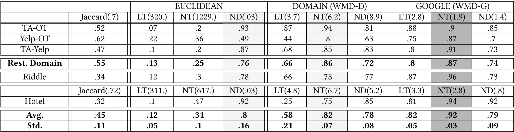

DOI: https://doi.org/10.1145/3178876.3186018
WWW '18: Proceedings of The Web Conference 2018, Lyon, France, April 2018
Many data-intensive applications collect (structured) data from a variety of sources. A key task in this process is record linkage, which is the problem of determining the records from these sources that refer to the same real-world entities. Traditional approaches use the record representation of entities to accomplish this task. With the nascence of social media, entities on the Web are now accompanied by user generated content. We present a method for record linkage that uses this hitherto untapped source of entity information. We use document-based distances, with an emphasis on word embedding document distances, to determine if two entities match. Our rationale is that user evaluations of entities converge in semantic content, and hence in the word embedded space, as the number of user evaluations grows. We analyze the effectiveness of the proposed method both as a stand-alone method and in combination with record-based record linkage methods. Experimental results using real-world reviews demonstrate the high effectiveness of our approach. To our knowledge, this is the first work exploring the use of user generated content accompanying entities in the record linkage task.
CCS Concepts: • Information systems → Deduplication; Data cleaning;
ACM Reference Format:
Andrew T. Schneider, Arjun Mukherjee, and Eduard C. Dragut. 2018. Leveraging Social Media Signals for Record Linkage. In WWW 2018: The 2018 Web Conference, April 23–27, 2018, Lyon, France. ACM, New York, NY, USA 10 pages. https://doi.org/10.1145/3178876.3186018
Record Linkage (RL) is the task of identifying record entries from different (Web) sources that refer to the same real-world entity. RL is an important component of processes that collect and aggregate data from multiple sources, such as Web data warehousing (e.g., Google and Bing Shopping), data aggregation (e.g., product and service reviews) [48], and security data mining for tracking criminal activities [12]. Records to be resolved reside in independent and uncooperative data sources. For example, Yelp.com (Yelp), TripAdvisor.com (TA), and OpenTable.com (OT) have business listings (e.g., restaurants) and there is substantial overlap in the entities to which the entries in these listings refer. Each entry takes the form of a record with multiple attributes: e.g., Yelp has the entry r 1 (Table 1) which refers to the entity Parc Restaurant, containing attributes such as name, address, and phone.
Traditional RL techniques [9] focus on attribute similarities to determine if the same real-world entity appears in multiple sources. The problem is notoriously hard if one resorts to attribute-to-attribute similarity since there can be multiple correct values for the same attribute and incomplete, out-of-date, and erroneous data. For example, the entity Parc Restaurant in Table 1, has the names “Parc Restaurant, Bistro & Cafe” in Yelp, “Parc Brasserie” in TA, and “Parc” in OT and its address varies between “227 South 18th Street” and “227 S 18th St.” Tru Restaurant has different phone numbers in the OT and TA records, r 4 and r 5, in Table 1. As an example of erroneous data, r 6 and r 7 in Table 1 have the same address and phone, but different names. r 7 is an incorrect piece of data. Record-oriented matching of entities develops similarity functions and thresholds per attribute [31]. Oftentimes these functions necessitate domain knowledge and manually created rules [22, 31], e.g., “St.” expands to “Street” helps to match the addresses of r 1 and r 2.
| RID | Name | Phone | Address | Reviews | Source |
| r 1 | Parc Rest., Bistro & Cafe | 215-545-2262 | 227 S. 18th St. | 1,360 | Yelp |
| r 2 | Parc Brasserie | 215-545-2262 | 277 S 18th Street | 1,294 | TripAdvisor |
| r 3 | Parc | 215-545-2262 | 227 South 18th Street | 5,479 | OpenTable |
| r 4 | Tru Restaurant | 312-202-0001 | 676 N Saint Clair St | 1,796 | OpenTable |
| r 5 | Tru Restaurant | 312-488-2488 | 676 North St. Clair Street | 329 | TripAdvisor |
| r 6 | Zahav | 215-625-8800 | 237 St James Pl | 1,434 | Yelp |
| r 7 | Zahav's Down the Shore Party | 237 St James Pl | 215-625-8800 | 3 | Yelp |
As a consequence, techniques using auxiliary information have been proposed for the task of RL, for example, mining entity relations [4] and query logs [47]. We propose an RL technique of this class in this paper. We consider the user generated content (UGC) accompanying entities on the Web as a new source of information to enhance the quality of RL. Virtually all entities on the Web are now accompanied by UGC in the form of user reviews, which are freely accessible. We propose an NLP-driven solution to RL, which has customarily been solved with record-centric techniques.
Brief Approach Overview. Figure 1 gives a graphic depiction of the basic steps of our algorithm. Our solution infers if two entities match based on their UGC. For each entry (Fig. 1.a) in a Web source, we collect its user reviews (Fig. 1.b) and organize them in a document, called a user review document (URD) (Fig. 1.c). Steps b and c are opaque to the user. All that we consider in assessing similarity are the resultant vectors (Fig. 1.d) that are the output of these processes. We determine whether two entities match by computing the similarity or distance between their associated vectors (Fig. 1.e); a key feature of these vector representations is that they are conducive to pairwise distance measures. For example, we collect and organize the reviews of r 1 in Yelp into URD d 1 and those of r 2 in TA into URD d 2. We decide whether r 1 and r 2 refer to the same real-world entity based on the similarity between d 1 and d 2. To our knowledge, this is the first work exploring the use of such content in the task of RL.
Numerous algorithms have been proposed to compute the distance between documents represented as vectors, or collections of vectors [2, 6, 34, 36, 43]. Our work is largely focused on a recently proposed algorithm, Word Mover's Distance (WMD) [20]. WMD employs word embeddings, where semantically meaningful representations of words are learned from their local occurrences within sentences. The appeal of word embeddings in our setting is that, in the embedded space, semantically related words, such as “Japanese” and “sushi” or “table” and “seating” from the restaurant domain, become very close, allowing entities to be matched with high accuracy. WMD has been shown to give unprecedented low k-nearest neighbor document classification error rates compared to the state-of-the-art document distances [20]. The problem of entity matching can be considered an instance of k-nearest neighbors clustering. Once the distance measure has been calculated, a decision is made (Fig. 1.f) as to whether this pair of entities constitutes a matching pair. We explore the decision process in multiple contexts. In one paradigm, we assume that there exists at most one correct match for each entity. The decision process here is based on determining the best possible assignment of pairings, in which we use an approach derived from the stable marriage problem [13]. In the more general setting, we make no such assumptions and use a general document clustering algorithm, specifically Ricochet [15, 45]. In both cases we show that the URD distance is a highly accurate measure for distinguishing entity matches.
The key principle of our approach is that a sufficient level of similarity between two URDs suggests that their respective entries refer to the same entity. This idea is based on the empirical observation that in the limit people tend to say the same things about the same entities. In other words, two individuals may focus on different aspects of a given entity in each of their respective reviews, but when considered as a group, the set of all reviews will exhibit a substantial internal similarity in content. This is similar to the motivation behind an aggregation of reviews (say 1 – 5 star reviews), where a product is tagged with the average over all the reviews, and it is assumed that as the number of reviews grows, this average converges to a stable limit. Intuitively, our approach mirrors those instances when a person draws a blank when trying to recall the name of an entity in a conversation (say an actor or a scientist), and then starts providing details (e.g., movies or papers, co-stars or co-authors, types of roles or areas of expertise) until the other person is able to correctly identify the entity in question.
It is intuitive that entities within a certain subdomain will cluster together. For instance, in the restaurant domain, two entities with the same cuisine type (e.g., Japanese) would be expected to contain much similar language and therefore have a small document distance. The empirical results of our experiments, however, show that this similarity extends beyond the subdomain to such a degree that pairs of records referring to the same entities consistently occur as the best match despite the existence of multiple subdomains across our datasets. Empirically, our results show that the semantics of the UGC do converge and that our proposed technique is effective.
Main Goal. We study the value of UGC in the task of RL both as a stand-alone method and in conjunction with a record-based RL method. Since our approach and the record-based approaches utilize complementary input: unstructured (user reviews) vs. structured (records), the use of one approach does not exclude the other. We first describe and analyze our UGC-based method in isolation. Then we discuss its added benefit when used together with a record-based RL method. We use FEBRL [8] for the latter. FEBRL includes features that are useful in our study: a tool for the generation of records with random typo noise and a clustering-based RL algorithm. We show that the joint application of our approach with a record-based approach can improve upon the latter by up to 11%.
Our experimental study with a large volume of reviews from the Restaurant and Hotel domains (about 1.7GB of total data) shows the promise of the approach. Our lead method obtains an average f1-score accuracy of .92, which matches or exceeds that of record-based approaches reported in the literature. We empirically show that the proposed WMD-based approach is robust to review sizes and results in graceful degradation in performance as the number of reviews is reduced.
The contributions of this paper are:
The work on RL can be broadly classified into three categories: (i) effective RL, (ii) optimal selection of similarity measures, and (iii) efficient RL. The works in (i) [4, 5, 10, 11, 17, 32, 37, 38] employ a broad range of machine learning techniques such as decision trees, SVM, logistic regression, correlation mining, and clustering. In (ii), the goal is to automatically select optimal similarity functions [7] for each attribute of an entity (e.g., using edit distance for the attribute phone and Jaccard distance for name) and determine similarity thresholds [31]. Scaling to large datasets increases the challenge of RL and the works in (iii) aim to develop parallel and efficient techniques to speed up the process [1, 3, 18, 19, 26, 33, 44, 46]. There are two broad approaches: distributed RL using MapReduce-like frameworks [42] and blocking [40]. Blocking uses a subset of the attributes to partition a set of entity records into blocks of records and treats records in different blocks as non-matching a priori. Many approaches are built around locality-sensitive hashing. RL is only applied within blocks to ameliorate its O(n 2) complexity. All works in (i) assume that data is partitioned a priori. We make the same assumption, except in Section 6.4.
Our work falls into (i) but distinguishes itself from the above approaches in that it is a record oblivious technique. It completely disregards the record attribute values of the records and relies entirely on the entities’ UGC.
Let E be a set of real-world entities within the same application domain (e.g., restaurant, hotel, book). Each entity has a set of attributes (e.g., a business entity has the attributes name, address, and telephone). Let S 1 and S 2 be two independent and uncooperative Web sources, each of which has records about the entities in E and each record is accompanied by a set of user reviews. We call these records entity records. The RL problem is to determine all entity records in S 1 × S 2 that represent the same real-world entity.
Denote by $R_i^{re},$ for i ∈ {1, 2}, the set of user reviews attached to the entity record re in Web source Si . The problem to be solved is: given two review sets $R^{re}_1$ and $R^{rf}_2$ determine whether re ≃ rf, i.e., whether re and rf refer to the same real-world entity e ∈ E.
In this section, we introduce the main technical tools utilized in our proposed technique: word embeddings, document representations for URD, and the Word Mover's Distance (WMD), which gives a measure of the dissimilarity between two text documents.
A word embedding is a mapping of a vocabulary L to a real number vector space $\mathbb {R}^d$ . d is typically in the range 50 to 1000. The key idea to embedding is that semantically similar words become “close” in the embedded vector space. Several (deep) learning methods have been proposed to generate this mapping [21, 23, 28, 39, 41]. We use the word2vec embedding method [27, 28]. word2vec learns a vector representation for each word using a shallow neural network language model, using the skip-gram method. For a sequence of training words w 1, ..., wT , the objective of word2vec is to maximize the average log probability
We represent documents as real number vectors d over the vocabulary L, |L| = n. We consider three different document representation models: Binary, TF-IDF, and Normalized. The latter two are instances of normalized bag-of-words (nBOW) models. The motivation for exploring multiple models is to try to determine which one gives the highest accuracy and consistency. We elaborate on this notion in the discussion in Section 6.3. We define the word weighting of these models here. In the following ci denotes number of occurrences of the word i from L in the document at hand. We discard the stop words in all cases.
Binary: di = 1 if word i is present in the document and di = 0 if it is not.
TF-IDF: di = tfi × idfi . We consider two weighting schemes [25], referred to as NT and LT. In both cases, $idf_i = log \frac{N}{df_i}$ , where N is the number of documents, and dfi is the number of documents that have word i. tfi = ci in NT and tfi = 1 + log(ci ) in LT.
Normalized: (ND) $d_i = \frac{c_i}{\sum _{i = 1}^{n} c_i}$ .
We implemented a fifth model, Okapi BM25, but due to its consistently poor performance, we omit it from the results.
WMD [20] is inspired from the Earth Mover's Distance metric [30, 35]. It interprets the distance between two documents, D and D′, as a transportation problem: the distance is the minimum amount that the embedded words of D need to travel to become the embedded words of D′.
Let d and d′ be the document representation vectors of D and D′, respectively. Let $\mathbf {X} \in \mathbb {R}^{d \times n}$ be the matrix embedding produced by word2vec for the vocabulary L. The ith column of X, denoted x i , represents the embedding of word i in $\mathbb {R}^{d}$ . WMD allows each word i in d to be transformed into any word j in d′, subject to the constraints that the amount leaving word i in d equals di and the amount received by word j in d′ is dj . These constraints can be expressed using a matrix flow T, where T ij denotes the “amount” of word i in d that travels to word j in d′. The WMD between two documents is defined as the minimum weighted cumulative cost required to move all words from d to d′ and is given by the solution to the following linear program:
where c(i, j) = ||x i − x j ||2 is the Euclidean distance computed in the word2vec embedding space and represents the distance between words i and j.
We present our RL algorithm in this section, whose main ingredient is the social media content accompanying the records. Our solution is built upon the following hypothesis: A single user review may not give enough details to unambiguously infer the entity to which it refers, but collectively (hundreds of them) they converge to a “signature” that uniquely identifies the entity. The set of users from a Web source (e.g., Yelp) and the set of users from another Web source (e.g., TripAdvisor) give, independently of each other, very similar aggregated depictions of a given entity. As long as the physical entity is fixed, user evaluations will converge in the review semantics of the word embedded space.
Out algorithm has the following steps:
We describe the steps of the algorithm in the following sections.
For each entity record re in the source Si , i = 1, 2, we collect the set of all its reviews $R_i^{re}$ . We create a URD Dre from $R_i^{re}$ as follows. We discard the metadata (e.g., user name, time and date) from each review $u \in R_i^{re}$ and perform basic text normalization steps to the content of u, yielding u′. This u′ is appended to Dre .
The domain vocabulary L is the set of all unique words found among all URDs Dre in all Si ’s. We perform basic word normalization steps to reduce the size of L. We remove all words that appear less than a specified threshold ζ across all Dre ’s in each source. ζ = 5 in this work. Table 3 gives the sizes of L for the various datasets we utilized. We then compute the vector d re of each URD Dre over L as described in Section 4.2.
After finding the URDs of all entities from sources S 1 and S 2, respectively, we compute the distances between every pair of entity records in S 1 × S 2. Let re 1 ∈ S 1 and re 2 ∈ S 2 be two entity records and $\mathbf {d}_{re_1}$ and $\mathbf {d}_{re_2}$ their vectors, respectively. Let $\sigma (\mathbf {d}_{re_1}, \mathbf {d}_{re_2})$ be the distance between $\mathbf {d}_{re_1}$ and $\mathbf {d}_{re_2}$ . We use two standard distances, Euclidean and Jaccard [16], for σ in $\mathbb {R}^n$ . These constitute our baseline distances. For WMD, we use each of the document representations as the word weights, which determine the amount required to move between two document representations in the WMD space $\mathbb {R}^d$ . The location of each weighted point in this space is determined by the word's word2vec embedding.
We now discuss how to produce the final set of matching entity records from the σ’s computed in the previous step. We call a match a subset M⊆S 1 × S 2. Among all possible matches M we seek the match $\widehat{M}$ with the property that for every pair $(re, rf) \in \widehat{M}$ , re and rf refer to the same real-world entity. In general, $\widehat{M}$ may contain pairs of the form (re, rf) and (re, rf′), rf ≠ rf′, i.e, an entity record in S 1 is mapped to multiple entity records in S 2, which can happen when S 2 contains duplicates. For example, the entity records r 6 and r 7 (Table 1) are duplicates. We distinguish two cases: (1) S 1 and S 2 are duplicate free and (2) S 1 and S 2 may each contain duplicates. We study both in this work and show that our approach to RL leads to substantial improvements in both cases.
5.4.1 Duplicate Free Sources. In practice, one may assume that S 1 and S 2 are duplicate free on the following empirical observation:
Let Am be the set of entity records in a Web source such that each record has at least m user reviews. We empirically observed that for a moderately large m (e.g., m = 20), Am is duplicate free, i.e., ∄re 1, re 2 ∈ Am such that re 1 and re 2 refer to the same real-world entity.
This observation has the following intuitive basis. If a source has two (or more) entity records about a real-world entity e, then users converge in large numbers toward the entity record that is the correct representation of e and avoid the incorrect one. Some users may still add their reviews to the wrong entity record, but their number is very small. For example, r 6, which is correct, amassed 1,434 reviews, whereas r 7, which is incorrect, amassed only 3 reviews. We implicitly meet this constraint on m, because we require each entity record to have sufficient reviews to allow accurate document to document comparison. We present a study about the sensitivity of our RL approach to the number of reviews in Section 6.5.
With the assumption that S 1 and S 2 are duplicate free, the problem of finding $\widehat{M}$ is closely related to well-known matching problems in bipartite graphs [14, 24]. In particular, it becomes an instance of the stable marriage problem (SMP). The basic formulation of the SMP is as follows. We are given two disjoint sets of size n, the men and the women. Each person has a list of strictly ordered preferences that contains all the members of the other sex. Person x prefers y to z, where y and z are not in the same set with x, iff y precedes z on x’s preference list. A matching Υ is a one-to-one correspondence between men and women. Υ is stable if there are no two pairs (x, y) and (x′, y′) in Υ such that x prefers x′ to y and y′ prefers x to x′. The SMP is to find a stable matching. The SMP can be extended to the cases where (i) the sets of men and women are of unequal sizes and (ii) each person's preference list is a subset of the members of the opposite sex in strict order. This is called the SMP withincomplete lists (SMI). A stable matching always exists for an instance of SMI and can be found in O(n 2) time complexity [13]. The matching may be partial: there may be men or women who do not have a partner in Υ.
Our RL problem is an instance of SMI because, in general, S 1 and S 2 are of unequal sizes. We utilize a learned distance threshold τ with which we eliminate possible pairings. If σ(d re , d rf ) > τ our method determines that $re \not\simeq rf$ , even if rf is the best match for re. The list of preferences of an entity record re ∈ S 1 is the list of entity records [rf 1, ..., rfs ] in S 2 with the property that $\tau {\gt} \sigma (\mathbf {d}_{re}, \mathbf {d}_{rf_j}), \forall j \in [1, s]$ and $\sigma (\mathbf {d}_{re}, \mathbf {d}_{rf_j}) {\gt} \sigma (\mathbf {d}_{re}, \mathbf {d}_{rf_t})$ , 1 ≤ t < j ≤ s. We similarly obtain the list of preferences of an entity record rf ∈ S 2 in S 1. $\widehat{M}$ corresponds to Υ.
5.4.2 Non Duplicate Free Sources. There may be instances when either S 1 or S 2, or both, contain duplicates. In that case, the previous approach will not work. We need a grouping or clustering approach. A cluster is a set of duplicate entity records from both S 1 and S 2. We follow the Stringer duplication detection framework [15] for this setting. Stringer examines a broad spectrum of algorithms for documents clustering as pertains to the RL problem. We considered all the algorithms presented in Stringer together with our proposed WMD measures. For many of them the performance was poor. The Ricochet family of algorithms [45], particularly the Sequential Rippling (SR) algorithm, performed well for our task. We present the empirical results in Section 6.4. The SR algorithm takes as input the similarity between pairs. We convert the WMD distance into a similarity s as:
In the SR algorithm, vertices (representing entities) are sorted in descending order of the average weight of their adjacent edges (pairwise similarity scores). The vertex with the highest weight is chosen as the seed of the first cluster, and all other vertices are assigned to this cluster. Subsequently, each following vertex is selected as a seed of a new cluster in order. For each new seed, vertices are reassigned to the new cluster if their similarity to the current seed is greater than to its previous cluster seed [45].
In a real world setting, entity records may be accompanied by varying amounts of UGC or none at all. In Section 6.6 we show that our UGC based technique can be effective in conjunction with traditional record based methods, even when the amount of available UGC is small (e.g., 20 user reviews). For a data source Si , let USi be the subset of entity records accompanied by UGC and SSi be the subset of entity records without UGC.
For datasources S 1 and S 2, we apply a purely record-based approach to the pairs in the sets: SS 1 × SS 2, SS 1 × US 2, and US 1 × SS 2. We are able to make use of the available UGC and apply a combination of the structured and unstructured approaches to the pairs in the sets UG 1 × UG 2. In a basic record based RL setting, we first find the pairwise distance for all equivalent fields between two sets of records. This distance ρ is some type of string edit distance.
For example, for records R 1 and R 2, with fields namei , phonei , and addressi for i = 1, 2, we first find the vector of distances ρ = [ρname , ρphone , ρaddress ] where ρname = ρ(name 1, name 2), ρphone = ρ(phone 1, phone 2), and ρaddress = ρ(address 1, address 2). These distances serve as the input to a decision function f(d), typically a linear function: f(ρ) = ∑ k αk · ρk . The weights αi can be learned using a training set of pairs of records whose match/nonmatch status are known. If the value f(ρ) > θ for some threshold θ, then the pair is predicted to be a match. A straightforward way to combine our UGC distance, σUGC , with this system is to append it to the vector ρ. The system then learns the optimal weight αUGC for combining σUGC with the record field values. This is the method we consider in this work. The exploration of alternative formulations for this combination is left as future work.
This section describes experimental results on real-world Web sources from a diverse spectrum of application domains, business listings, electronics, and consumer goods. We first analyze the proposed approach in isolation and then in connection with a record-based approach. The main takeaway is (1) in the presence of UGC our method is at least as effective as a record-based approach, but it requires each entity record to have at least 100 user reviews, and (2) when combined with a record-based approach the overall RL effectiveness improves by 7% on average, in some domains by up to 12%. Improvements in accuracy can begin at only 20 reviews per entity record.
We describe the datasets and experiment settings in this section. We report accuracy with f1-scores.
6.1.1 Datasets. We evaluate our approach on four real-world datasets: TOY, HOTEL, and Amazon compiled by ourselves1, and Restaurant based on the dataset from the RIDDLE repository2. Table 2 gives the statistics of the datasets. We report our empirical findings using the traditional f1-score measure. The results are reported in Table 4.
TOY contains three lists of restaurant records from TA, OT and Yelp. They have 741, 487, and 250 entity records, respectively. We pair them giving us 3 sets: Yelp-TA, Yelp-OT, and OT-TA. We manually identified 131, 187, and 147 matched entity record pairs, respectively (Table 2).
Hotel contains lists of hotel records from TA (HT) and Hotels.com (HC). There are 169 entities in HT and 375 in HC. We identified 152 matched pairs between the 2 sources (Table 2).
Riddle has lists of restaurants from Zagat.com and Fodors.com, of sizes 331 and 533, respectively. It has 112 matched pairs. It does not have user reviews. We searched for the Fodors restaurants in TA and the Zagat restaurants in Yelp to find their respective UGC.
Amazon has lists of products from the categories Bikes, Mattresses, TVs, and Laptops with 157, 72, 124, and 78 entities, respectively. We use this dataset to show the percentage improvement to the task of RL when we combine our proposed method with a record-base matcher and to demonstrate the applicability of our technique across domains.
| Document Models |
| NT, LT, Binary, ND |
| Document Similarity Measures : σ |
| Jaccard, Euclidean, WMD-G, WMD-D |
| Lexicon Sizes |L| = n |
| TA-OT : 36,293, TA-Y : 48,329, Y-OT : 55,194, |
| RIDDLE : 26,668, HOTEL : 35,031, Bike : 20,347, |
| TV : 16,944, Laptop : 28,288, Mattress : 15,417 |
| Word Embeddings Dimensions : d |
| WMD-G : 300, WMD-D : 50 |
6.1.2 Document models. For comparison, we implement 4 document models, Binary, LT, NT, and ND (Section 4.2); and four document distances, Jaccard, Euclidean, WMD-G, and WMD-D. WMD-G is backed by the Google News word2vec model, which has an embedding for 3M words/phrases; WMD-D is backed by a domain word2vec model trained on all the URDs from Yelp, TA, and OT, in the Restaurant domain, and on all the URDs from HT and HC in the Hotel domain. WMD-G and WMD-D operate on the embedded space $\mathbb {R}^d$ , d = 300 and d = 50, respectively. In total, we implement 10 RL algorithms: the Jaccard distance and binary document model are paired together; each of Euclidean, WMD-G and WMD-D is paired with each of the document models LT, NT, and ND. The Jaccard and all Euclidean instantiations of the RL algorithm are the baselines against which we compare the WMD-G and WMD-D instantiations, our contribution. The baselines operate in $\mathbb {R}^n$ , where n is the size of vocabulary L. n varies between 26,668 (in Riddle) and 55,195 (in Yelp–OT) (Table 3, third item). We remove all words that appear fewer than ζ = 5 times across all URDs. Table 3 summarizes the instantiations of the proposed RL framework.
|  |
As mentioned in Section 5.3, the computation of WMD can be costly. In this trial, we study the number of words n over which we need to compute WMD (Eq. 1) to achieve high accuracy. We use WMD-D-NT and WMD-G-NT, the best two performing instantiations of our algorithm. We randomly select a set V of 100 matched entity record pairs from TOY. The words are ranked by their di weights (Section 4.2). We range n from 10 to 100 in increments of 10 and run both WMD-D-NT and WMD-G-NT on V, every time recording the f1-scores. Figure 2 shows the outcome of this study. We observe that both WMD-D-NT and WMD-G-NT converge very quickly to high f1-scores. This allows us to select low n’s, thus ameliorating the computational demands of our algorithm. In all subsequent experiments, we set n = 40 for WMD-G and n = 50 for WMD-D.
Table 4 compares the accuracy of all 10 instantiations of the proposed RL algorithm across the 3 datasets. The table shows for each method the highest f1-score and the overall accuracy in the domain. We give the threshold τ of the latter in the header of each column. The shaded columns in the table correspond to the best performing document model for particular a document distance. We draw a number of interesting observations from this set of experiments.
(i) WMD-G-NT obtains the highest f1-score in most cases (the right most gray shaded column in the Table 4). The 3M word Google News model performs superior to the smaller domain model. This supports the finding that more data creates better embeddings than less, but domain relevant data [27].
(ii) The NT document model gives the best performance for both WMD-D and WMD-G, and also performs consistently well with the lowest standard deviation of all methods (the middle and right most right gray shaded columns in the Table 4). Euclidean performs unexpectedly poorly with either of the TF-IDF weighting schemes. The least sophisticated of the considered document models, binary, outperforms it by a significant margin, over 130%.
(iii) Euclidean distance under the ND model looks to perform comparably to both WMD-G-NT and WMD-D-NT on several pairings of the entity record lists (the left most column in the Table 4). This however is a high accuracy fool's gold. If we instead train the threshold τ across the entire Restaurant domain and then apply it to each of the individual list pairs, the average f1-score drops by more than 15% to 73% (see row Rest. Domain). For instance, it attains an f1-score of .5 for Yelp-OT, as under the ND document model many unrelated URDs cluster closely together in the $\mathbb {R}^n$ space.
Our experiments show that word embedding-based distance measures are marginally affected by the heterogenous content of URDs, less than 3% on average for WMD-G-NT (row Avg. / Std. and column NT in the section GOOGLE (WMD-G) of Table 4). They remain consistent both vertically, i.e., across the pairs of entity record lists, and horizontally, i.e., across the document representation models. The last row of Table 4 gives the average f1-scores and the standard deviations. Based on the results reported in this row, we claim that WMD-G-NT is the most accurate (highest average) and most consistent (lowest standard deviation) of all the models.
Our explanation for the poor performance of the baselines, is that the URDs are generated by a diverse user population, with varied writing skills. Binary and TF-IDF document representation models perform well in classical information retrieval tasks since documents are in general created by individual users, but here two URDs of the same entity may have different unique words and thus reside in different regions of space over the vocabulary L. However, these documents become semantically close in the embedded space.
Comparison with Record-based Matchers. We use Riddle to compare our method with two record-based methods [29, 49] on the task of RL. The two works report f1-scores of 89.8% and 94.6%, respectively. We obtain 96% with our best performing algorithm, WMD-G-NT. This is quite remarkable given that we do not use a single bit of data from the records themselves, such as phone numbers, addresses or names. This showcases the effectiveness of our NLP-driven technique and the usefulness of user reviews in the RL task.
| domain | source | prec. | rec. | f1-score |
| TA-OT | .91 | .89 | .89 | |
| Rest. | TA-Yelp | .89 | .9 | .9 |
| Yelp-OT | .88 | .87 | .88 | |
| Rest. | TA-OT-Yelp | .89 | .84 | .86 |
| Hotel | TA-HC | .86 | .86 | .86 |
In the previous experiments, we assumed that each data source was internally duplicate free. To study how our method performs when this assumption does not hold, we investigate the performance using a general clustering algorithm for the RL problem. In this investigation we artificially divide the UGC for a random sample of entities from each source, such that each entity may be represented up to 5 times in a given data source, each containing non-overlapping content. Specifically we generate the data sets examined here as follows: For each review source, we uniformly randomly select 10% of its entities. For each selected entity e, we uniformly randomly assign each of its reviews to one of k pseudo-entries, e 1, …, ek . For each e, k is selected randomly from the range [2, 5] subject to the constraint that each pseudo-entry has at least 100 reviews (we justify this choice in Section 6.5). These k new entries are added to our review corpus and the original e is removed. This process generates a significantly larger data set than used in the previous study. For example, for the restaurant domain, it consists of 855, 202, and 594 entities for Yelp, TA, and OT, respectively. In addition, for a given entity e, any other entity is a possible match, whether from the same or a different source. This process generates a total of 1741 and 653 entities for the restaurant and hotel domains, respectively. The WMD distances are then calculated as before. As discussed in Section 5.4.2, we use the Ricochet algorithms [45], in particular the Sequential Rippling (SR) algorithm.
The goal now is to find for any given entry, those entries which refer to the same real world entity, both from its own data source and from separate data sources. Under this set-up, each entry may have anywhere from zero to fourteen correct matches (for TOY-ALL, zero to nine for the pairwise trials), which makes this a far more complicated task. The results reported here show our best performing model, G-WMD-NT.
We consider the clustering task pairwise for the TOY data for each pair of sources, as well as for all sources combined. As we show, the performance is only marginally worse when all sources are considered. The results of the general clustering approach are comparable to the duplicate free case utilized in the previous set of experiments. The average f1-score drops by only 4%, from 92% to 88%, despite this being a more difficult task. This shows that our methods can be applied in the presence of internal duplicates or when more than two data sources are being combined in one pass. The results reported in Table 5 are in terms of clusters, following the method used in the original paper [45] for computing precision, recall, and f1-score.
In this experiment we want to understand where our approach is most effective and where it begins to break down. We use our best performing method WMD-G-NT.
Experiment Design. Consider a set of matched pairs M = {(re 1, re 2)|re 1 ∈ S 1, re 2 ∈ S 2}; a set Ω = {ωi } of k ranges of integer numbers, e.g., ω 1 = (0, 10], ω 2 = (10, 25] and so on; and B = {bij |1 ≤ i, j ≤ k} a set of buckets so that if (re 1, re 2) is in bucket bij then one of re 1 or re 2 has its number of reviews in the range ωi and the other in ωj . One iteration of the experiment has the following steps. First, we randomly and evenly distribute the pairs in M over B. Second, for each pair (re 1, re 2) in bucket bij , we randomly generate a number m 1 ∈ ωi and a number m 2 ∈ ωj . Third, we randomly select m 1 reviews for re 1 from the set of all reviews for re 1, and m 2 reviews for re 2 from the set of all reviews for re 2. Fourth, we run the matching algorithms and collect their f1-scores at each bucket.
We run the experiment on TOY and Hotel. M has 120 randomly chosen matched pairs in each case. k = 5 with ranges: ω 1 = (0, 10] (LE10), ω 2 = (10, 25], ω 3 = (25, 50], ω 4 = (50, 100], and ω 5 = (100, Z] (GT100), where Z ≥ 200. We iterate through each trial 10 times. The averaged values of the f1-scores are given in Table 6.
Outcome. We observe two main tendencies. (1) as we follow the diagonal from the top left to the bottom right, accuracy steadily improves. This agrees with the general intuition that more reviews leads to improved accuracy, as well as the convergence of review semantics in the limit. (2) further from the diagonal, when the disparity between the number of reviews for each record is high, accuracy suffers. These results suggest that our method as a standalone RL method is most effective whenever entity records have at least about 100 user reviews in practice, which is a modest number in today's Web.
| domain | recs only | recs+20 revs. | recs+100 revs. |
| bike | .874 | .938 / 7% | .977 / 12% |
| hotel | .807 | .899 / 11% | .898 / 11% |
| restaurant | .907 | .955 / 5% | .98 / 8% |
| TV | .747 | .75 / .3 % | .788 / 6% |
| laptop | .849 | .864 / 2% | .903 / 6% |
| mattress | .851 | .861 / 1% | .878 / 3% |
In this section we show that we obtain significant percentage f1-score improvement when we combine UGC-based techniques with record-based RL techniques. In many cases, only a small amount of UGC substantially improves the accuracy of the matching. This improvement is exhibited across multiple domains. In this experiment we use the publicly available record-based RL tool FEBRL [8].
For this study we consider review text and record data from 6 very different domains: restaurant, hotel, TV, laptop, mattress, and bike. The record attributes are collected from the original data sources. For restaurant (TOY) and Hotel, the records come from different data sources. For the Bike, Mattress, TV, and Laptop domains, the records are all collected from a single data source. This is useful since we can easily construct gold standards. We use Amazon dataset to simulate the effect of combining data records from distinct data sources. We synthetically perturb the attribute values of a copy of the original record. We use standard practices to perturb the record-level data– at random: swap two characters, delete one character, and insert one character– which have been used to simulate common errors found in imprecise data sources [15]. Each error is introduced with .5 probability in the record. In addition, with .05 probability a record field value is dropped completely.
We learn the best threshold model on the record data using an 80/20 train/test random split of data using FEBRL's optimal threshold classifier and run this classifier on the test set. For k ∈ {20, 40, …, 100}, we take a sample of k reviews without replacement for each entity. (For domains from a single source, we take 2k reviews and disjointly split them randomly between the two matching entity records.) We use our G-WMD-NT model to compute the pairwise UGC similarity between the entities from each data source using each k-set of reviews. These pairwise similarities are appended to the set of record field similarities. We learn the optimal threshold classifier and run this on the test set.
The results in Table 7 show that for half of the domains, the addition of the information extracted from only 20 reviews can improve the f1-score of RL by at least 5%. This is useful in situations where the individual quantity of UGC may be limited and the record representations suffer from some inaccuracies. The structured and unstructured data can be incorporated to yield a higher performing matcher than either in isolation. As the number of reviews increases, the RL performance both improves and becomes more stable.
The TV domain is an interesting case study. We did not perturb the records for this domain. The record-based matcher yields an f1-score of only .75. The record data for the TV domain contains many fields with very similar values for example:
These products differ by only a few characters, thus the string similarities between any two pairs are very high. The challenge for record-based RL techniques to delineate between true and false match pairings is greatly complicated when non-matches have very similar record representations, as can often be the case. In these situations, the additional information beyond the record representations, such as UGC, can prove very useful, given an RL technique that can make use of such information.
Intuition might lead one to the assumption that the good accuracy of our method can straightforwardly be attributed to the frequent mentions of attribute values in an entity record across user reviews, like pieces of restaurant names (e.g., ‘Parc’) or cuisine (e.g., ‘French’). In this section, our goal is to (in)validate this intuitive statement. Specifically, we aim to compute the average overlap between an entity record re and its document vector d. A large overlap would confirm the statement, and thus, imply that the feature set of a regular record-oriented method and that proposed in this work are indistinguishable, a low overlap will disprove it, and show that the user generated content about entities brings a new set of features not available in their record representations.
We examine the overlap of words (tokens) from an entity record with the top 50 highest weighted words (i.e., most important words) from the vector representation. Recall that only those, or a subset thereof, are used in our algorithms (Section 6.2). Let Wre be the set of words found in the attributes of re, and let W d be the set of words which are the 50 highest weighted from the URD of re. We design a measure inspired from the f1-score measure, fre , which is robust against the variation in the number of words across entity records. It is defined as follows:
fre has the classic properties of the f1-score measure, such as fre ∈ [0, 1], for Wre = W d , fre = 1, and for Wre ∩W d = ∅, fre = 0. In addition, it has the desired property that fre < < 1 when |Wre | < < |W d |. The final measure Fre averages the fre ’s over the set of all entity records RE in an application domain. In our experiment, RE is the set of all entity records in the TOY dataset.
| Domain | Google | |||||
| OT | Yelp | TA | OT | Yelp | TA | |
| avg. | 0.103 | 0.08 | 0.083 | 0.089 | 0.069 | 0.073 |
| std. | 0.047 | 0.04 | 0.048 | 0.045 | 0.042 | 0.046 |
Table 8 summarizes the outcome of this study: average Fre and standard deviation across all entities in a domain are given. The table shows that there is very little overlap between the entity records and their URDs and that there is a substantial amount of useful information beyond the record attributes that is not yet utilized for the task of RL. Additionally, this shows that the high accuracy of our technique is not due to a small set of key words found in the attribute fields, for example, in entity names or street addresses. The information found in the record attributes has only a minimal impact at most, and it is the convergence of the reviews themselves that renders our technique effective.
We observe that the time requirements for WMD are higher than for the baselines. The greatest time cost is the calculation of the pairwise distance between vector representations. For the Euclidean baseline this calculation is roughly 2 × 10− 4 seconds per pair of records, for WMD it is roughly 2 × 10− 2 seconds per pair. For reasonably large datasets, the time demands of the WMD calculation can be high. For example, we compute the WMD for 222,623 entity pairs on average in TOY. Blocking would substantially help ameliorate the computational requirements of the WMD calculation by reducing the number of exact WMD calculations. Our focus in this work however is on the accuracy of the method. Future work includes the additional implementation of performance improvements.
In this paper we showed that social media content accompanying entities on the Web is a valuable resource in the task of RL. We utilized a word embedding-based distance to compute the distance between UGC documents. We argue the effectiveness of our proposed method in classic RL settings and empirically show that the proposed method is highly accurate in the presence of UGC despite not using any entity specific attributes, such as name or address. We also show that it can be combined with record-based methods where it can lead to a substantial improvement in effectiveness. Future work includes expanding the integration of our technique with traditional RL methods and extending our technique to incorporate user models in the document representation and document distances. For instance, for a user that posts multiple reviews or a single lengthy review, reducing the relative importance of a word that occurs multiple times therein.
The authors would like to thank the anonymous reviewers for their comments. This work was supported in part by the NSF grants 1546480 and 1527364.
1These datasets will be shared upon individual requests.
2www.cs.utexas.edu/users/ml/riddle/data.html
This paper is published under the Creative Commons Attribution 4.0 International (CC-BY 4.0) license. Authors reserve their rights to disseminate the work on their personal and corporate Web sites with the appropriate attribution.
WWW '18, April 23-27, 2018, Lyon, France
© 2018; IW3C2 (International World Wide Web Conference Committee), published under Creative Commons CC-BY 4.0 License.
ACM ISBN 978-1-4503-5639-8/18/04.
DOI: https://doi.org/10.1145/3178876.3186018